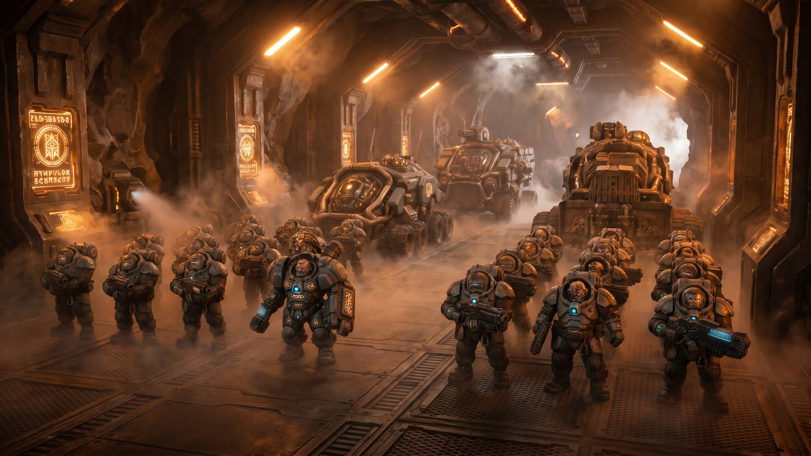

Muster Hall Record
The Hold Assembled
The Kin moved with industrial certainty. Armor sealed. Weapons checked. Routes assigned. Names entered. The claim-hold did not ask who would survive. It asked what each Kin would hold until survival became irrelevant.